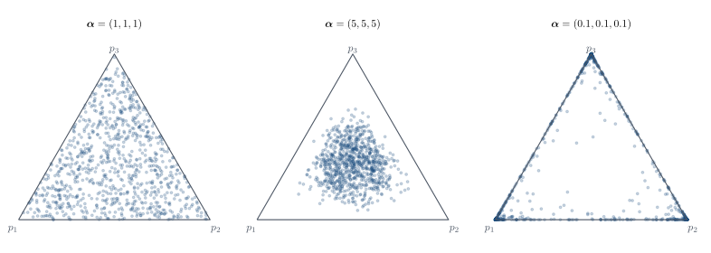
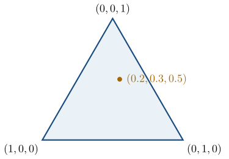

Categorical data and the Dirichlet distribution
Part of Bayesian statistics · 7 questions on this topic · What links here
Categorical data and the Dirichlet distribution

| Part | Bayesian statistics |
| Chapter | 5 of 9 in this part |
| Previous | Markov chains, Gibbs sampling, and Metropolis–Hastings |
| Next | Bayesian hypotheses and model comparison |
| Questions | 7 (6 book, 1 practice) |
| Definitions | Categorical and multinomial models · Dirichlet distribution |
| Results | The Beta distribution is the two-category Dirichlet · Multinomial central limit theorem · Dirichlet moments · Interior Dirichlet mode · Dirichlet–Multinomial conjugacy |
| Figures | 2 |
From two categories to many
Definition 1 (Categorical and multinomial models) For two categories, a Bernoulli trial has probabilities (p,1-p) and an aggregated count has a binomial distribution. For K categories, let
{\boldsymbol{p}}=(p_1,\ldots,p_K)^{\mathsf T}, \qquad p_k\geq0, \qquad \sum_{k=1}^Kp_k=1.
A single observation Y_i\in\{1,\ldots,K\} has
\mathbb{P}(Y_i=k\mid{\boldsymbol{p}})=p_k.
For n conditionally independent observations define
X_k=\sum_{i=1}^n\mathbf{1}\{Y_i=k\}.
Then \sum_kX_k=n and
{\boldsymbol{x}}\mid{\boldsymbol{p}}\sim\operatorname{Multinomial}(n,{\boldsymbol{p}}).
To derive its mass function, first choose which x_1 positions receive category 1, then which x_2 of the remaining positions receive category 2, and so on: \begin{align*} \binom{n}{x_1} \binom{n-x_1}{x_2}\cdots \binom{x_{K-1}+x_K}{x_{K-1}} &=\frac{n!}{x_1!(n-x_1)!} \frac{(n-x_1)!}{x_2!(n-x_1-x_2)!}\cdots\\ &=\frac{n!}{x_1!\cdots x_K!}. \end{align*} Every one of those sequences has probability \prod_kp_k^{x_k}, so p({\boldsymbol{x}}\mid{\boldsymbol{p}}) =\frac{n!}{\prod_{k=1}^Kx_k!} \prod_{k=1}^Kp_k^{x_k}. \qquad(1) As a likelihood in {\boldsymbol{p}},
L({\boldsymbol{p}};{\boldsymbol{x}})\propto\prod_{k=1}^Kp_k^{x_k}.
The Dirichlet prior
Definition 2 (Dirichlet distribution) The conjugate prior for {\boldsymbol{p}} is the Dirichlet distribution. Write
\alpha_0=\sum_{k=1}^K\alpha_k, \qquad \alpha_k>0.
The multivariate Beta function is
B({\boldsymbol{\alpha}}) =\frac{\prod_{k=1}^K\Gamma(\alpha_k)} {\Gamma(\alpha_0)}.
Then p({\boldsymbol{p}}\mid{\boldsymbol{\alpha}}) =\frac1{B({\boldsymbol{\alpha}})} \prod_{k=1}^Kp_k^{\alpha_k-1}, \qquad {\boldsymbol{p}}\in\mathcal S_{K-1}, \qquad(2) where
\mathcal S_{K-1} =\left\{{\boldsymbol{p}}:p_k\geq0,\ \sum_{k=1}^Kp_k=1\right\}
is the probability simplex.
Proposition 1 (The Beta distribution is the two-category Dirichlet) When K=2, write p_1=p and p_2=1-p. Restricting the Dirichlet density to the one-dimensional simplex gives
p(p\mid\alpha_1,\alpha_2) =\frac{\Gamma(\alpha_1+\alpha_2)} {\Gamma(\alpha_1)\Gamma(\alpha_2)} p^{\alpha_1-1}(1-p)^{\alpha_2-1},
which is exactly \operatorname{Beta}(\alpha_1,\alpha_2). The Dirichlet is therefore a genuine extension of the Beta family rather than merely a similar-looking density.
Article: The Beta distribution is the two-category Dirichlet →
The prior cannot itself be multinomial. A multinomial distribution is a discrete distribution for a vector of counts, whereas the unknown {\boldsymbol{p}} varies continuously over the simplex. The likelihood may be discrete in the data while the prior and posterior are continuous in the parameter; these are different arguments of the same Bayesian calculation.
For K=3 the simplex is a triangle. Beginning with three categories and a triangle is easier than beginning with the general simplex, although the triangle eventually has to give way.

If all \alpha_k=1, the density in Equation 2 is constant on the simplex. This means uniform density over valid probability vectors. It does not force p_1=\cdots=p_K=1/K.
For the Dirichlet distribution, separate location from concentration. The ratios \alpha_k/\alpha_0 describe the centre of the prior, while \alpha_0=\sum_k\alpha_k controls how tightly probability vectors cluster around it. Multiplying every \alpha_k by the same constant keeps the centre but changes the strength of the prior. That is a more useful way to reason about these parameters than trying to picture a high-dimensional density one coordinate at a time.
When every \alpha_k<1, the density favours sparse probability vectors near the boundary. For \alpha_1=\cdots=\alpha_K=0.1, typical draws put most of their mass on one category: a “winner takes all” prior. The density is singular along the boundary, so the careful statement is about the distribution of draws, not a finite interior mode located at a corner.
One should be prepared to abandon a visualisation that is not helping.
Proposition 2 (Multinomial central limit theorem) Let {\boldsymbol{x}}\sim\operatorname{Multinomial}(n,{\boldsymbol{p}}) and \widehat{\boldsymbol{p}}={\boldsymbol{x}}/n. For fixed interior {\boldsymbol{p}}, define the covariance matrix
{\color{blue}\boldsymbol{\Sigma}}({\boldsymbol{p}}) =\operatorname{diag}({\boldsymbol{p}})-{\boldsymbol{p}}{\boldsymbol{p}}^{\mathsf T}.
Then
\sqrt n\,(\widehat{\boldsymbol{p}}-{\boldsymbol{p}}) \xrightarrow{\mathcal D} \operatorname{N}_K\!\left( {\boldsymbol{0}}, {\color{blue}\boldsymbol{\Sigma}}({\boldsymbol{p}}) \right).
The covariance matrix is singular because the components of \widehat{\boldsymbol{p}}-{\boldsymbol{p}} sum to zero. On the (K-1)-dimensional simplex, the count cloud therefore tightens at the usual n^{-1/2} rate and becomes locally normal.
Moments and the mode
Proposition 3 (Dirichlet moments) Standard Dirichlet integrals give \begin{align*} \mathbb{E}(P_k)&=\frac{\alpha_k}{\alpha_0},\\ \mathbb{E}(P_k^2)&=\frac{\alpha_k(\alpha_k+1)} {\alpha_0(\alpha_0+1)},\\ \mathbb{E}(P_jP_k)&=\frac{\alpha_j\alpha_k} {\alpha_0(\alpha_0+1)},\qquad j\neq k. \end{align*}
Therefore \begin{align*} \operatorname{Var}(P_k) &=\mathbb{E}(P_k^2)-\mathbb{E}(P_k)^2\\ &=\frac{\alpha_k(\alpha_k+1)} {\alpha_0(\alpha_0+1)} -\frac{\alpha_k^2}{\alpha_0^2}\\ &=\frac{\alpha_k\alpha_0(\alpha_k+1) -\alpha_k^2(\alpha_0+1)} {\alpha_0^2(\alpha_0+1)}\\ &=\frac{\alpha_k(\alpha_0-\alpha_k)} {\alpha_0^2(\alpha_0+1)},\\[4pt] \operatorname{Cov}(P_j,P_k) &=\mathbb{E}(P_jP_k)-\mathbb{E}(P_j)\mathbb{E}(P_k)\\ &=\frac{\alpha_j\alpha_k}{\alpha_0(\alpha_0+1)} -\frac{\alpha_j\alpha_k}{\alpha_0^2}\\ &=-\frac{\alpha_j\alpha_k} {\alpha_0^2(\alpha_0+1)}. \end{align*} The negative covariance is forced by the sum-to-one constraint.
To derive the interior mode, maximise
\ell({\boldsymbol{p}})=\sum_{k=1}^K(\alpha_k-1)\log p_k
subject to \sum_kp_k=1. The Lagrangian is
\mathcal L({\boldsymbol{p}},\lambda) =\sum_{k=1}^K(\alpha_k-1)\log p_k +\lambda\left(\sum_{k=1}^Kp_k-1\right).
Differentiating,
\frac{\partial\mathcal L}{\partial p_k} =\frac{\alpha_k-1}{p_k}+\lambda=0 \quad\Longrightarrow\quad p_k=-\frac{\alpha_k-1}{\lambda}.
Summing over k and imposing the constraint gives
1=\sum_kp_k =-\frac1\lambda\sum_k(\alpha_k-1) =-\frac{\alpha_0-K}{\lambda},
so \lambda=-(\alpha_0-K).
Proposition 4 (Interior Dirichlet mode) Consequently, \operatorname{mode}(P_k) =\frac{\alpha_k-1}{\alpha_0-K}. \qquad(3) This derivation requires every \alpha_k>1. Otherwise the mode may lie on a face or corner of the simplex.
Dirichlet–Multinomial conjugacy
Multiply the fully normalised likelihood and prior: \begin{align*} p({\boldsymbol{x}}\mid{\boldsymbol{p}})p({\boldsymbol{p}}) &=\frac{n!}{\prod_kx_k!} \prod_kp_k^{x_k} \frac1{B({\boldsymbol{\alpha}})} \prod_kp_k^{\alpha_k-1}\\ &=\frac{n!}{\prod_kx_k!B({\boldsymbol{\alpha}})} \prod_kp_k^{x_k+\alpha_k-1}. \end{align*} The integral over the simplex of the product is B({\boldsymbol{\alpha}}+{\boldsymbol{x}}), so \begin{aligned} p({\boldsymbol{x}}) &=\frac{n!}{\prod_kx_k!} \frac{B({\boldsymbol{\alpha}}+{\boldsymbol{x}})} {B({\boldsymbol{\alpha}})}\\ &=\frac{n!}{\prod_kx_k!} \frac{\Gamma(\alpha_0)}{\Gamma(\alpha_0+n)} \prod_{k=1}^K \frac{\Gamma(\alpha_k+x_k)}{\Gamma(\alpha_k)}. \end{aligned} \qquad(4)
Theorem 1 (Dirichlet–Multinomial conjugacy) After division by this evidence, \boxed{ {\boldsymbol{p}}\mid{\boldsymbol{x}} \sim\operatorname{Dirichlet}(\alpha_1+x_1,\ldots,\alpha_K+x_K)}. \qquad(5)
The posterior mean is \begin{align*} \mathbb{E}(P_k\mid{\boldsymbol{x}}) &=\frac{\alpha_k+x_k}{\alpha_0+n}\\ &=\frac{\alpha_0}{\alpha_0+n} \frac{\alpha_k}{\alpha_0} +\frac n{\alpha_0+n}\frac{x_k}{n}. \end{align*} The posterior mode, when every \alpha_k+x_k>1, is
\widehat p_{k,\mathrm{MAP}} =\frac{x_k+\alpha_k-1}{n+\alpha_0-K}.
Thus \alpha_k behaves like a pseudo-count for the mean and \alpha_k-1 for the mode.
For a new categorical observation, \begin{align*} \mathbb{P}(Y_{n+1}=k\mid{\boldsymbol{x}}) &=\int\mathbb{P}(Y_{n+1}=k\mid{\boldsymbol{p}}) p({\boldsymbol{p}}\mid{\boldsymbol{x}})\,\mathrm{d}{\boldsymbol{p}}\\ &=\int p_kp({\boldsymbol{p}}\mid{\boldsymbol{x}})\,\mathrm{d}{\boldsymbol{p}}\\ &=\mathbb{E}(P_k\mid{\boldsymbol{x}})\\ &=\frac{\alpha_k+x_k}{\alpha_0+n}. \end{align*}
Advertising-response table
Example 1 (Advertising responses) The following table classifies 501 people by gender and response to an advertising campaign:
| Negative | Neutral | Positive | Total | |
|---|---|---|---|---|
| Male | 53 | 57 | 147 | 257 |
| Female | 93 | 38 | 113 | 244 |
| Total | 146 | 95 | 260 | 501 |
Question. Use an unrestricted six-cell multinomial with the uniform prior
{\boldsymbol{p}}\sim\operatorname{Dirichlet}(1,1,1,1,1,1).
Find the posterior distribution and the posterior mean and MAP estimate of the male-negative cell probability.
Solution. The conjugate update gives
{\boldsymbol{p}}\mid{\boldsymbol{x}} \sim\operatorname{Dirichlet}(54,58,148,94,39,114).
For the male-negative cell,
\mathbb{E}(P_{11}\mid{\boldsymbol{x}})=\frac{54}{501+6}=\frac{54}{507} \approx0.1065,
while
\widehat p_{11,\mathrm{MAP}} =\frac{54-1}{507-6}=\frac{53}{501} \approx0.1058.
The MAP equals the maximum-likelihood cell proportion because every prior parameter equals one.
Questions on this topic
Open a question to attempt it. Its worked answer is folded away at the bottom of the page.
| Question | Source | Answer |
|---|---|---|
| Beta hidden inside Dirichlet | Book exercise | – |
| Why not a multinomial prior? | Book exercise | – |
| Small concentrations | Book exercise | – |
| The simplex CLT | Book exercise | – |
| Dirichlet updating | Book exercise | – |
| Restaurant ordering methods | Book, applied | ✓ |
| Q22. Advertising responses and Dirichlet inference | Practice set | ✓ |
What links here
Pages (2)
- Bayesian hypotheses and model comparison — via Dirichlet
- Reference formulas and problem-solving workflow — via Dirichlet
Questions and answers (5)
- Book exercises: Beta hidden inside Dirichlet · Dirichlet updating · Restaurant ordering methods (answer) · Make the simplex integral equal one
- Practice set: Q22
See also
- Articles from this chapter: Categorical and multinomial models · Dirichlet distribution · The Beta distribution is the two-category Dirichlet · Multinomial central limit theorem · Dirichlet moments · Interior Dirichlet mode · Dirichlet–Multinomial conjugacy
- All bayesian statistics chapters
- Glossary and index
- Distribution sheet and formula lookup